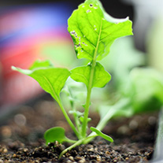
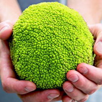

-

Potting Soil
Learn more -

Peat Moss
Learn more -

Fertilizers
Learn more -

Mulch
Learn more -

Compost
Learn more
Community Benefits
Nursery Supply Co., LLC Fundraising is dedicated to helping organizations of all types fund their needs and efforts. Our fundraisers have helped sports teams purchase new uniforms, youth groups fund mission trips, scout troops pay for camping equipment and neighborhood organizations pay for landscaping. The sky is the limit on profit dollars your organization can generate with a mulch and/or bulb fundraiser from Nursery Supply Co.,
Learn more